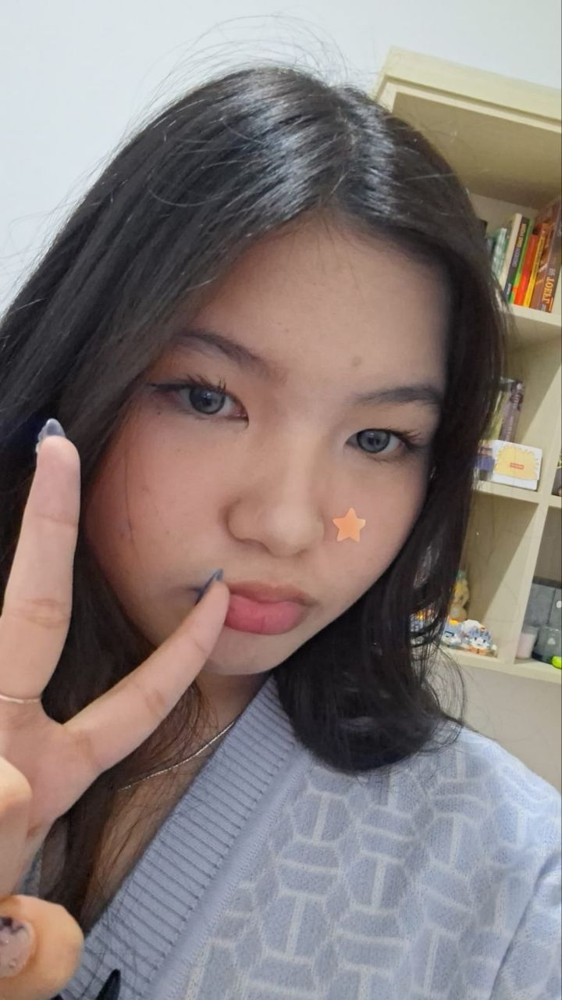
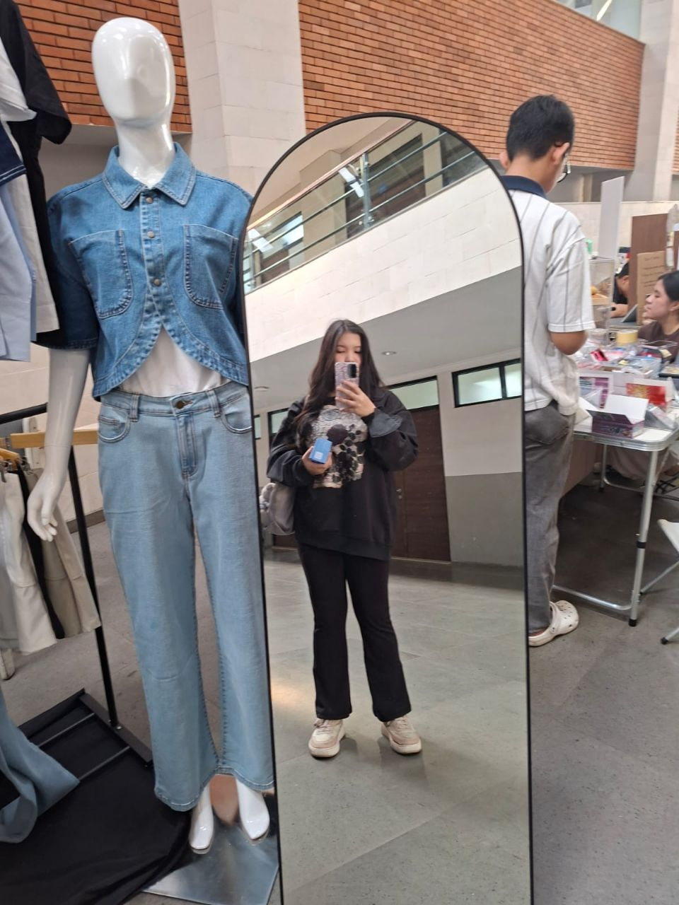
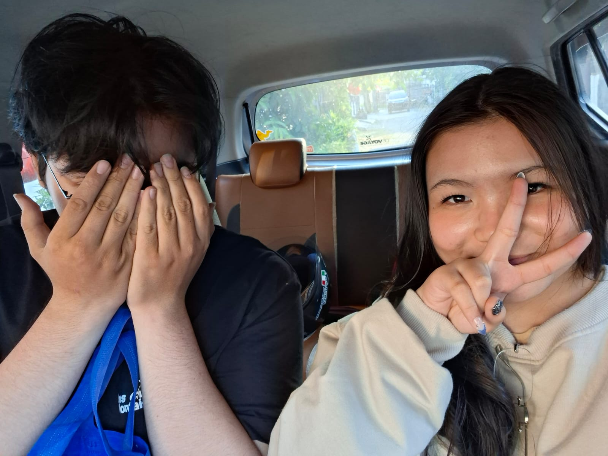
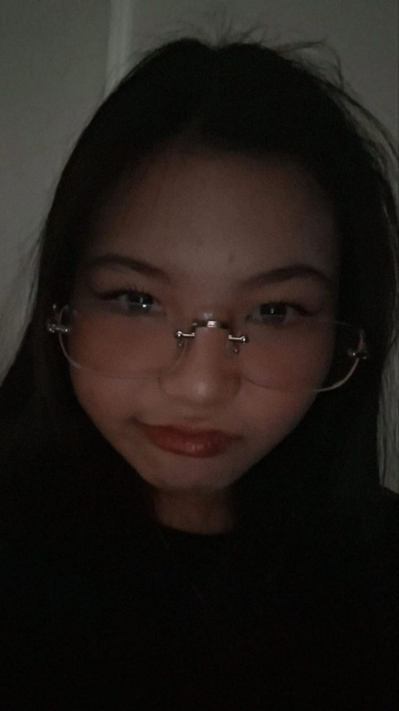
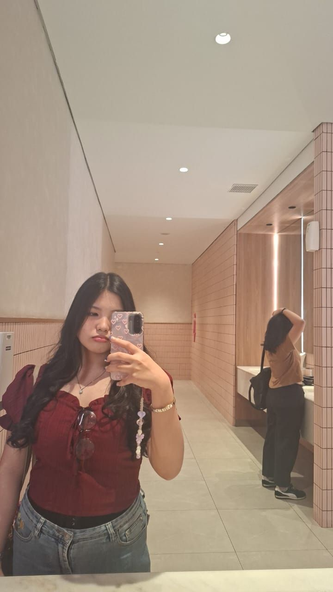

I made a little something for you.
Before you see it...
give me a few seconds.
For all the little moments...

You made my life a little more colorful.

I love seeing you confident, happy, and simply being yourself.

I love the little moments when we're together.
The conversations, the laughter, and even the quiet moments.

I'm genuinely happy that I got to meet you.

And I'm grateful for every memory we've made so far.
There's something I've been meaning to say...
I'm grateful that I met you,
because somehow, you made my life a little more colorful.
I love seeing you being confident,
being happy, and simply being yourself.
I love the little moments when we're together.
The conversations, the laughter,
and even the quiet moments that don't need words.
There's something I've always wanted to say...
I'm genuinely happy that I met you.
And I'm proud to know someone like you.
But perhaps, the thing I'm most grateful for
is that we found each other at a time
when we were both learning to be okay on our own.
Maybe that's why meeting you feels a little more special.
I don't know what our story will become,
and I don't want to rush it.
For now,
I'm just grateful that you're here.
Thank you for being you, Kath. ♡
Whatever this story becomes,
I'm just grateful that I got to meet you.
— from someone who's really glad he met you.